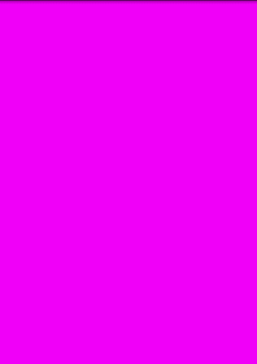

Android 3D OpenGL开发之一— 变幻的背景色
一、入门几个基础的概念
1.1、顶点Vertex
顶点是3D空间中的一个点，也是许多对象的基础元素。在OpenGL中的顶点少至二维坐标(X,Y)，多至四维(X,Y,Z,W). w轴是可选的，默认的值是1.0. Z轴也是可选的，默认为0. 在这个系列中，我们将要用到3个主要的坐标X，Y，Z，因为W一般都是被用来作为占位符。vertex的复数是vertices（这对非英语母语的人来说比较重要，因为这容易产生歧义）。所有的对象都是用vertices作为它们的点，因为点就是vertex。
1.2、三角形Triangle
三角形需要三个点才能创建。因此在OpenGL中，我们使用3个顶点来创建一个三角形。
1.3、多边形Polygon
多边形是至少有3个连接着的点组成的一个对象。三角形也是一个多边形。
1.4、图元Primitives
一个Primitive是一个三维的对象，使用三角形或者多边形创建。形象的说，一个有50000个顶点的非常精细的模型是一个Primitive，同样一个只有500个顶点的低模也叫做一个Primitive。
二、我们的第一个OpenGL工程
以下我们就通过代码来说明具体的OpenGL的应用了。那么这个示例最终要达到的效果是，当我们的手在屏幕上滑动的时候屏幕的背景颜色也就跟着改变（可以用来检测屏幕的坏点，呵呵O(∩_∩)O~）。
2.1、咱先创建一个工程，工程名字为OpenGL3D01，我们有这样的三个文件，名字分别为：
MainActivity.java
OpenGLView.java
OpenGLRenderer.java
这里我们因为是做OpenGL的东西，所以暂时就不需要布局的.xml文件，因为视图就是由我们的OpenGL自己画出来的。
2.1.1、OpenGLRenderer.java
import javax.microedition.khronos.egl.EGLConfig;import javax.microedition.khronos.opengles.GL10;
import android.opengl.GLSurfaceView;
public class OpenGLRenderer implements GLSurfaceView.Renderer {
private float red = 0.9f;
private float green = 0.2f;
private float blue = 0.2f;
@Override
public void onSurfaceCreated(GL10 gl, EGLConfig config) {
}
@Override
public void onSurfaceChanged(GL10 gl, int width, int height) {
gl.glViewport(0, 0, width, height);
}
@Override
public void onDrawFrame(GL10 gl) {
/**
* 我们通过glClearColor()方法为底色定义了颜色。 底色是在我们能看到的所有东西的后面，所以所有在底色后面的东西都是不可见的。
* 可以想象这种东西为浓雾，挡住了所有的东西。
*/
gl.glClearColor(red, green, blue, 1.0f);
// 清除颜色的Buffer然后让现实上面我们通过glClearColor来定义的颜色
/**
* 为了让颜色变化可见，我们必须调用glClear()以及颜色缓冲的Mask来清空buffer， 然后为我们的底色使用新的底色。
*/
gl.glClear(GL10.GL_COLOR_BUFFER_BIT);
}
/**
* 设置颜色的值
* @param r
* Red值
* @param g
* Green值
* @param b
* Blue值
*/
public void setColor(float r, float g, float b) {
red = r;
green = g;
blue = b;
}
}
我们实现了GLSurfaceView.Renderer这个接口,然后要实现它的三个方法：
onSurfaceCreated()：在surface创建以后调用
onSurfaceChanged()：在surface发生改变以后调用，例如从竖屏切换到横屏的时候
onDrawFrame()：画图的时候调用，系统会一直调用这个方法反复的来画图
2.1.2、OpenGlView.java
import android.content.Context;import android.opengl.GLSurfaceView;
import android.view.MotionEvent;
public class OpenGLView extends GLSurfaceView {
private OpenGLRenderer or;
public OpenGLView(Context context) {
super(context);
or = new OpenGLRenderer();
setRenderer(or);
}
// 监听touch事件，用来改变颜色
public boolean onTouchEvent(final MotionEvent event) {
if (event.getAction() == MotionEvent.ACTION_MOVE
|| event.getAction() == MotionEvent.ACTION_DOWN) {
queueEvent(new Runnable() {
public void run() {
or.setColor(event.getX() / getWidth(), event.getY()
/ getHeight(), 1.0f);
}
});
}
return true;
}
}
这个代码没有太多要说的，继承了GLSurfaceView类目的就是要将我们画出来的OpenGL图像作为View显示出来。
2.1.3、MainActivity.java
import android.app.Activity;import android.os.Bundle;
import android.view.Window;
import android.view.WindowManager;
public class MainActivity extends Activity {
@Override
public void onCreate(Bundle savedInstanceState) {
super.onCreate(savedInstanceState);
// 隐去电池等图标和一切修饰部分（状态栏部分）
this.getWindow().setFlags(WindowManager.LayoutParams.FLAG_FULLSCREEN,
WindowManager.LayoutParams.FLAG_FULLSCREEN);
// 隐去标题栏（程序的名字）
this.requestWindowFeature(Window.FEATURE_NO_TITLE);
setContentView(new OpenGLView(this));
}
}
2.2、完成后程序运行的效果截图：
当手指滑动是颜色会跟着改变
